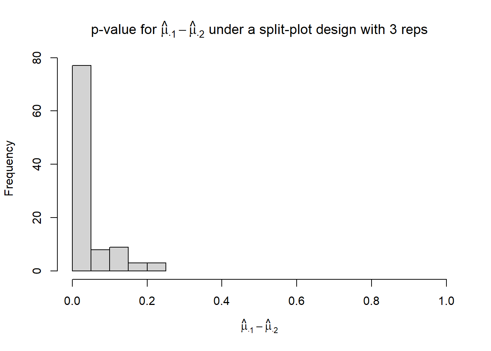
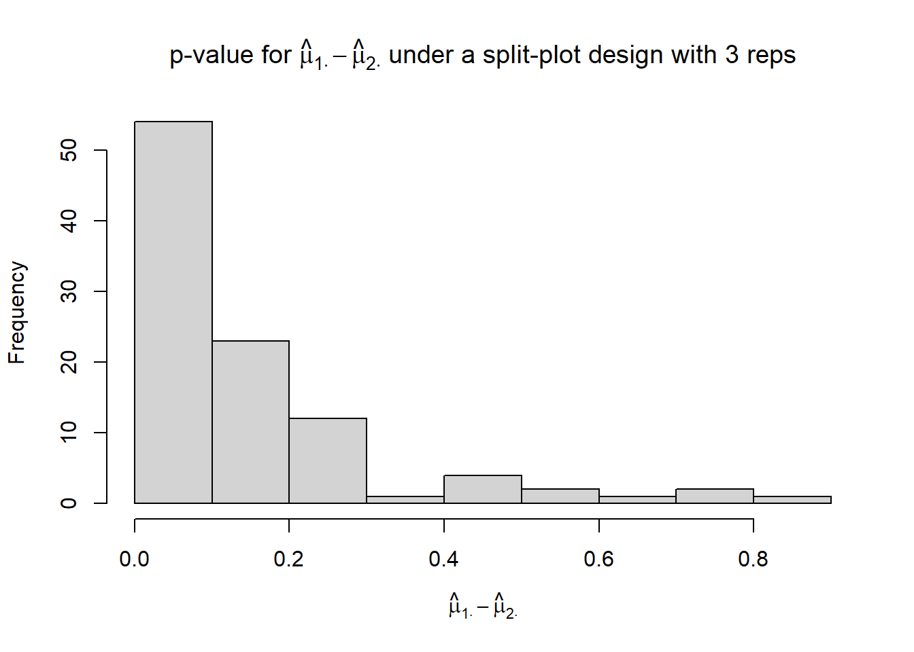
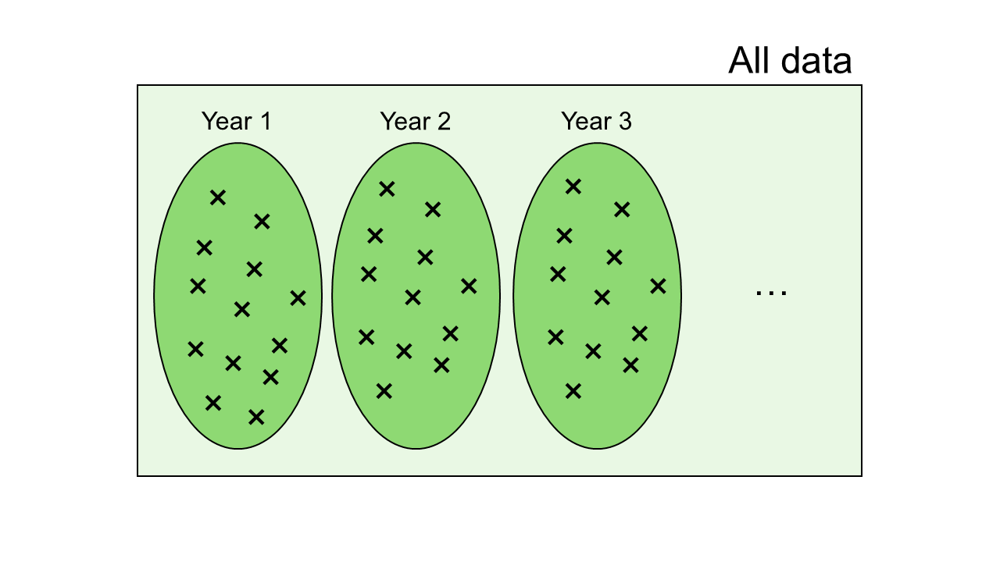

7 Día 4 (mañana): Casos aplicados
7.1 Review so far
- Study objectives may include prediction, estimation, and attribution
- Statistical methods have different strengths and may be more (or less) useful depending on the data-method combination.
- Statistical inference is the most rich when we focus on effect sizes and confidence intervals.
- Mixed models are especially useful to model data that show dependence
7.2 Environmental covariates
Just like nested designs (e.g., split-plot designs), we can model multi-year environment data fairly easily using mixed models. The data below come from a multi-environment trial evaluating barley height in different environments with multiple weather covariates (i.e., years with different environmental covariates).
# data adapted from the agridat R package
dat_merged <- read.csv("../data/data_barley.csv")
dat_merged |>
ggplot(aes(year, height))+
geom_point()+
theme_pubr()+
coord_cartesian(ylim = c(0, 110))+
labs(y = "Height (cm)", y = "Year")
dat_merged |>
dplyr::select(-c(gen, height)) |> unique() |>
pivot_longer(cols = rainfall_1:temp_6) |>
ggplot(aes(year, value))+
geom_point()+
theme_pubr()+
theme(aspect.ratio = .4)+
facet_wrap(~name, scales = "free_y")+
labs(y = "Height (cm)", y = "Year")
1. Start with the data.
What is the distribution of the data? For now let’s assume normal.
2. Think about the structure in the data
Note that our data contain multiple rows of observed heights, yet the predictors (i.e., weather covariates) are just a few years repeated throughout. Thus, although we have multiple rows of data, the real independent data for the predictors are much fewer. Just take a look at the data:
## year gen height rainfall_1 rainfall_2 rainfall_3 rainfall_4 rainfall_5 rainfall_6 srad_1 srad_2
## 1 1974 G01 81.0 0 0.16 1.59 2.65 1.7 2.21 2.26 2.74
## 2 1974 G02 72.3 0 0.16 1.59 2.65 1.7 2.21 2.26 2.74
## 3 1974 G03 79.3 0 0.16 1.59 2.65 1.7 2.21 2.26 2.74
## 4 1974 G04 88.5 0 0.16 1.59 2.65 1.7 2.21 2.26 2.74
## 5 1974 G05 78.5 0 0.16 1.59 2.65 1.7 2.21 2.26 2.74
## 6 1974 G06 89.3 0 0.16 1.59 2.65 1.7 2.21 2.26 2.74
## srad_3 srad_4 srad_5 srad_6 sowing_t temp_1 temp_2 temp_3 temp_4 temp_5 temp_6
## 1 2.57 2.25 2.67 2.36 17 8.36 9.6 12.11 12.13 18.43 13.75
## 2 2.57 2.25 2.67 2.36 17 8.36 9.6 12.11 12.13 18.43 13.75
## 3 2.57 2.25 2.67 2.36 17 8.36 9.6 12.11 12.13 18.43 13.75
## 4 2.57 2.25 2.67 2.36 17 8.36 9.6 12.11 12.13 18.43 13.75
## 5 2.57 2.25 2.67 2.36 17 8.36 9.6 12.11 12.13 18.43 13.75
## 6 2.57 2.25 2.67 2.36 17 8.36 9.6 12.11 12.13 18.43 13.75Although the response shows different values, if we wish to study the relatoinship bewteen the weather covariates and the height, there is an obvious dependence structure.

Thus, let’s assume the data are nested within years.
3. Think about the treatment effects (or covariates)
We can consider genotypes have different mean heights and rainfall on period 3 (i.e., vegetative stage) also affects height.
4. Write the full statistical model
Given that the blocking structures are the years, the corresponding model is
\[y_{ij}=\mu_0 + G_i +\beta_1x_{ij} +year_j + \varepsilon_{ij}, \\ year_j\sim N(0, \sigma^2_{year}), \\ \varepsilon_{ij}\sim N(0, \sigma^2_{\varepsilon}).\]
The matching R code is
## Linear mixed model fit by REML ['lmerMod']
## Formula: height ~ 1 + gen + rainfall_3 + (1 | year)
## Data: dat_merged
##
## REML criterion at convergence: 776.3
##
## Scaled residuals:
## Min 1Q Median 3Q Max
## -3.14642 -0.51931 -0.03119 0.56487 2.08029
##
## Random effects:
## Groups Name Variance Std.Dev.
## year (Intercept) 90.67 9.522
## Residual 22.69 4.764
## Number of obs: 135, groups: year, 9
##
## Fixed effects:
## Estimate Std. Error t value
## (Intercept) 65.523 5.154 12.713
## genG02 -6.656 2.246 -2.964
## genG03 -3.689 2.246 -1.643
## genG04 7.778 2.246 3.464
## genG05 -2.944 2.246 -1.311
## genG06 6.633 2.246 2.954
## genG07 10.822 2.246 4.819
## genG08 8.011 2.246 3.568
## genG09 9.844 2.246 4.384
## genG10 10.978 2.246 4.889
## genG11 10.800 2.246 4.810
## genG12 3.900 2.246 1.737
## genG13 -1.022 2.246 -0.455
## genG14 11.711 2.246 5.215
## genG15 8.844 2.246 3.939
## rainfall_3 6.085 2.518 2.417##
## Correlation matrix not shown by default, as p = 16 > 12.
## Use print(x, correlation=TRUE) or
## vcov(x) if you need itAfter appropriate model checking, we can evaluate the effect of rainfall:
## rainfall_3 rainfall_3.trend SE df lower.CL upper.CL
## 1.48 6.09 2.52 7 0.131 12
##
## Results are averaged over the levels of: gen
## Degrees-of-freedom method: kenward-roger
## Confidence level used: 0.95Note the degrees of freedom are 7, because the mixed model recognizes that the weather data are the same for each year, and there is a total of 9 years.
What would have happened if we didn’t account for this dependence structure in the data?
- We would have assumed independent observations.
- Overconfidence in precision of \(\hat{\beta_1}\).
mod_simple <- lm(height ~ gen + rainfall_3, data = dat_merged)
emtrends(mod_simple, ~rainfall_3, "rainfall_3")## rainfall_3 rainfall_3.trend SE df lower.CL upper.CL
## 1.48 6.09 0.686 119 4.73 7.44
##
## Results are averaged over the levels of: gen
## Confidence level used: 0.95